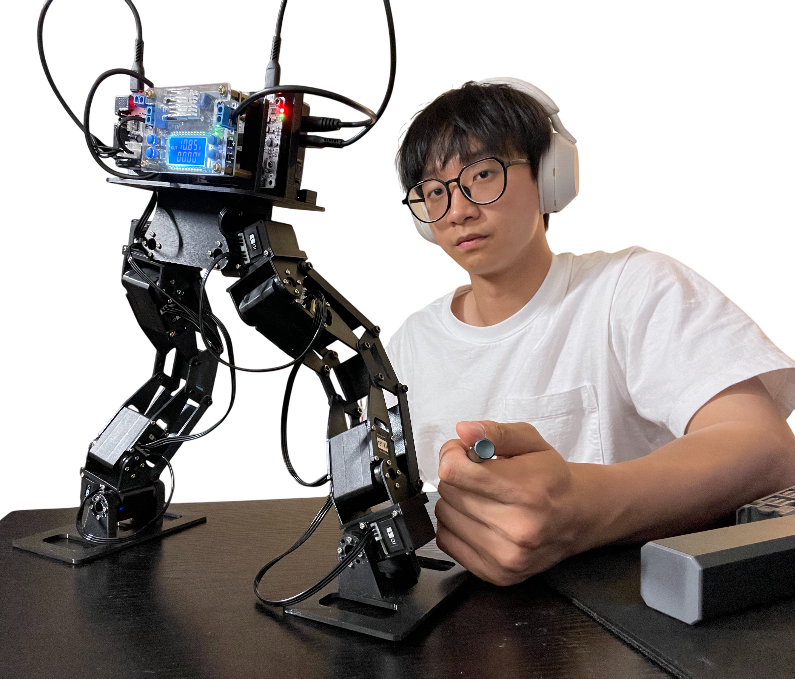

Ruogu Li 李若谷
I am a full-stack robotics researcher at the University of North Carolina at Chapel Hill, advised by Prof. Mingyu Ding. At UNC, I have been fortunate to collaborate with Dr. Haochen Shi, Prof. C. Karen Liu, and Prof. Shuran Song. While at Columbia University, I worked with Prof. Sunil K. Agrawal and Prof. Hod Lipson. My research focuses on robotic systems, including hardware design and robot learning.

01
News
- Handroid was released on arXiv.
- Attended ICRA 2026 in Vienna, Austria.
- Sldprt-Net was released on arXiv.
- Sldprt-Net was accepted to ICRA 2026.
02
Research
03
Honors
04